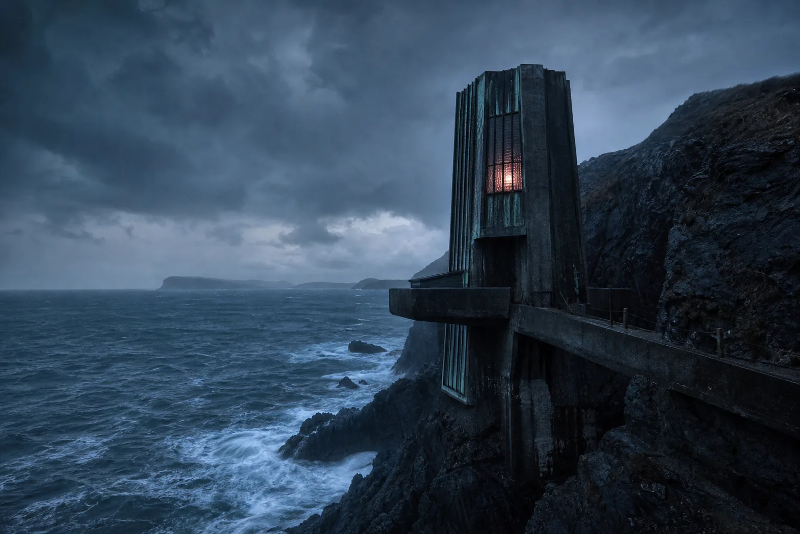
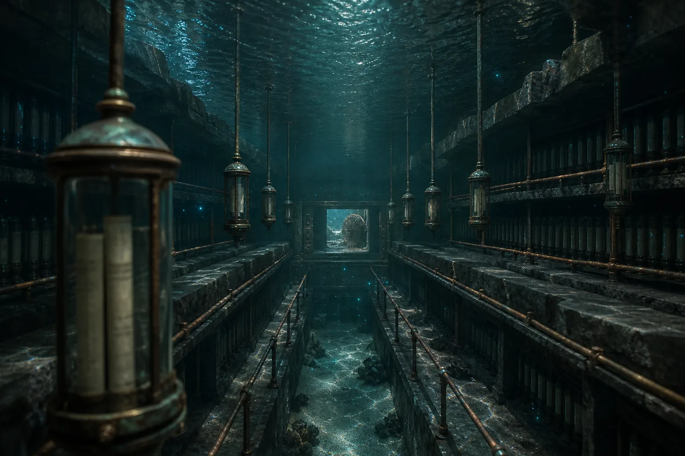

A
985hPa
Pressure
Air writes first. The brass diaphragm bows before the rain reaches stone.
Calibrating the tide lens
00 — The tidal observatory
A continuous descent through weather, pressure, and the rooms that remember both.
Enter the signal↘︎Four instruments translate the same storm. None agree on what it means.
Air writes first. The brass diaphragm bows before the rain reaches stone.
Salt enters every seam. What remains after a century is the shape of resistance.
The coral lens turns once every forty-seven seconds: warning, witness, pulse.
Below the tide, each reading is sealed in glass and left to gather pressure.
Sea level approaches 00.0m
The stair turns around the same copper spine that continues into the archive. Nothing changes rooms. Only depth changes.
The rain does not stop at the surface. It slows, separates, and becomes a field of suspended evidence.

Wind entered west by north-west. The lens turned without interruption.
Twenty-three hectopascals in nine hours. Copper flex: 1.8 millimetres.

At twelve metres, weather stops being a forecast and becomes architecture.
Every capsule is a weather event. Position records force. Patina records time.
1957.11
Seven hours without horizon. Three outer instruments lost; the interior spine held.
09Force
1974.02
The first capsule to fracture inward. No water entered the record.
11Force
1998.09
A summer temperature at autumn depth. The anomaly remained for eighty-one days.
+3.7°CAnomaly
2026.08
The lens turned at 04:17. The signal descended, intact, to this room.
OpenStatus
05 — Surface / 05:03 UTC
At first light, the archive returns every storm to the horizon — changed by pressure, exact in memory.
Return to the signal↑︎